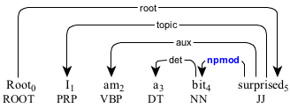

npmod : adverbial noun phrase
An adverbial noun phrase (npmod) is a noun phrase that modifies another element in the sentence as an adverbial.
Similarly to the adverbial clause, the adverbial noun phrase can take a semantic role.


An adverbial noun phrase modifying an adjective.
An adverbial noun phrase modifying an adjective.
An adverbial noun phrase as a reflexive.